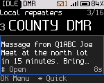
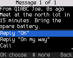
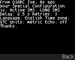
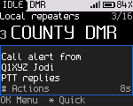
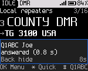

消息、呼叫提示与电台检查
文本消息、呼叫提示和电台检查在 DMR 信道上工作。电台参考说明哪些电台已验证这些功能。它们都不需要编解码器。发送需要可发射的 DMR 信道和你的 DMR ID。
接收消息
消息到达时，电台显示带发送者和开头几个词的横幅 8 秒。横幅显示期间按 # 打开消息。除非关闭设置 > 声音 > 消息提示音，电台会随横幅播放短促的三音提示。有振动马达的电台还会振动两次，除非关闭设置 > 声音 > 振动。呼叫提示或发给你的私密呼叫振动一次长振，紧急情况振动四次。

横幅之后，状态行显示“M”和未读消息数，hub 中“消息”旁显示“1 条新”。
阅读消息
-
按 OK、2（消息）。最新的在最前。未读消息高亮显示。
-
聚焦消息并按 OK。电台显示发送者、到达时间及文本，并把它标记为已读。
-
文本下方：
行 作用 显示全文 在单独的页面上显示全文。上、下键滚动，返回键返回。仅当文本太长、屏幕以“…”截断时出现 回复“OK” 向发送者发送“OK” 回复“在路上” 向发送者发送“在路上” 呼叫 临时把发送者设为通话目标 删除 删除消息。无法撤销
在消息上按 # 打开其发送者的操作。在打开的消息中按 PTT 呼叫发送者。




电台在内存中保留最近收到的 4 条消息。关机后丢失。
发送消息
- 打开该人或通话组的操作。在主屏幕按 # 处理最近呼叫者，或在联系人上按 #。
- 按 3（消息）。
- 选择文本（“OK”“在路上”“给我回电”或“现在不方便通话”）。按 OK 发送。文本按电台语言发送（设置 > 显示 > 语言）。

电台显示“正在发送至……”并返回主屏幕。发给个人的消息会请求确认。没有确认时，电台会以各种格式重试。结果以横幅显示：
| 横幅 | 含义 |
|---|---|
| “已送达……” | 对方的电台确认了消息 |
| “……无应答”，并有“未送达：请重发” | 没有收到确认。消息不会保留待重试。请从操作中重发 |
| “已发送至……” | 发往通话组的消息已发出。通话组消息没有确认 |
关闭确认式 IP 数据后（tools/rfoundry_debug.py data ip-settings auto off），发给个人的 ETSI 消息也只发送一次，并显示“已发送至”。
自行输入文本尚未构建。“编写……”为灰色。你发送的消息不会存储在电台中。
消息格式
设置 > 连接 > 消息格式选择你发送消息所用的格式。无论该设置如何，电台都能读取三种格式。回复会使用其所回复消息的格式。
| 格式 | 适用 |
|---|---|
| ETSI（默认） | 标准 DMR 文本消息（ETSI IP 文本）。设为“DMR 标准”文本的电台和调度软件可读取。发往个人会确认送达 |
| ETSI 短 | 只显示 ETSI 短数据消息的电台。会确认送达 |
| Motorola | 设为 Motorola 文本消息（TMS）的 MOTOTRBO 电台和调度软件。会确认送达。在不支持 Motorola TMS 的构建中不可用 |
如果你的电台在 ETSI 成为默认之前设置过并保存了数据设置，它会继续发送 Motorola 消息，直到你更改设置。
呼叫提示
呼叫提示会寻呼另一台电台。即使对方没有收听你的通话组，它也会在那里响铃。
- 打开该人的操作（主屏幕按 #，或在联系人上按 #）。
- 按 5（呼叫提示）。电台显示“呼叫提示至……”并返回主屏幕。
- 电台最多尝试 3 次。结果以横幅显示：“……应答了提示”或“……无应答”。
有人向你发送呼叫提示时，电台显示“来自……的呼叫提示”，并提示“PTT 回复”。横幅显示期间按 # 打开呼叫者的操作。除非关闭设置 > 连接 > 应答呼叫提示，你的电台会确认该提示。

电台检查
电台检查要求另一台电台应答，无需对方操作。它显示该电台是否开机并在范围内。
- 打开该人的操作。
- 按 4（电台检查）。电台显示“正在检查……”。
- 电台最多尝试 3 次。结果以横幅显示。“……已应答（0.8 秒）”给出往返时间。“……：无应答”附有“关机、超出范围或在别处”。
在设置 > 连接 > 应答电台检查开启时（默认），你的电台会应答他人的电台检查。应答是电台在你未按 PTT 时进行的短发射；如果不希望如此，请关闭该设置。

注册（ARS）与位置（LRRP）
ARS 在开机时和切换信道后向在线状态服务器注册。设置服务器 ID 之前处于关闭状态。尚无菜单项。开发者通过调试链路设置。
LRRP 应答调度员的位置请求。没有 GPS 的电台（电台参考）回答“无定位”。设置 > 位置 > 应答 GPS 请求可关闭应答。